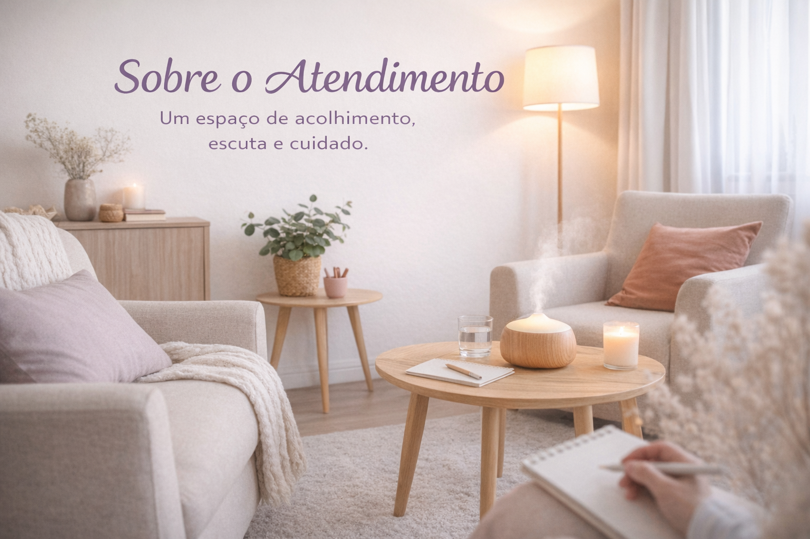
Sobre o Atendimento
Um espaço de acolhimento, escuta e cuidado. Entenda como funciona a psicoterapia e como pode te ajudar.
Ler texto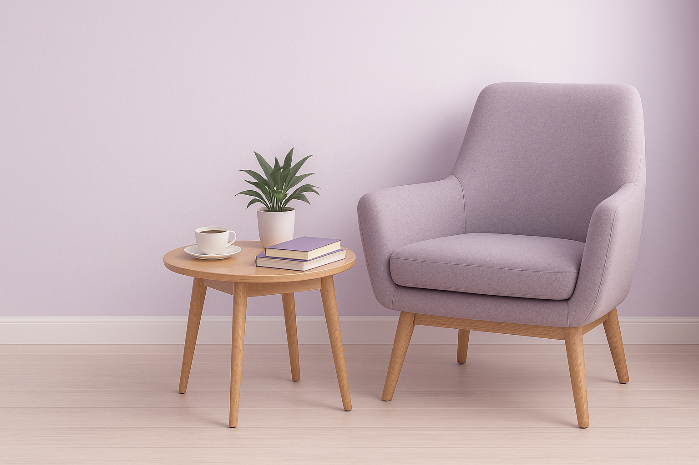
Espaço dedicado a reflexões, orientações e materiais psicoeducativos sobre autoconhecimento, saúde mental, infância, adolescência, vida adulta e família. Cada texto é elaborado com carinho para inspirar sua jornada de bem-estar emocional.
Conteúdos sobre psicoterapia infantil, terapia para adolescentes, psicoterapia para adultos e orientação parental, voltados para quem busca entender melhor as necessidades emocionais dos filhos, da família e de si mesmo(a).

Um espaço de acolhimento, escuta e cuidado. Entenda como funciona a psicoterapia e como pode te ajudar.
Ler texto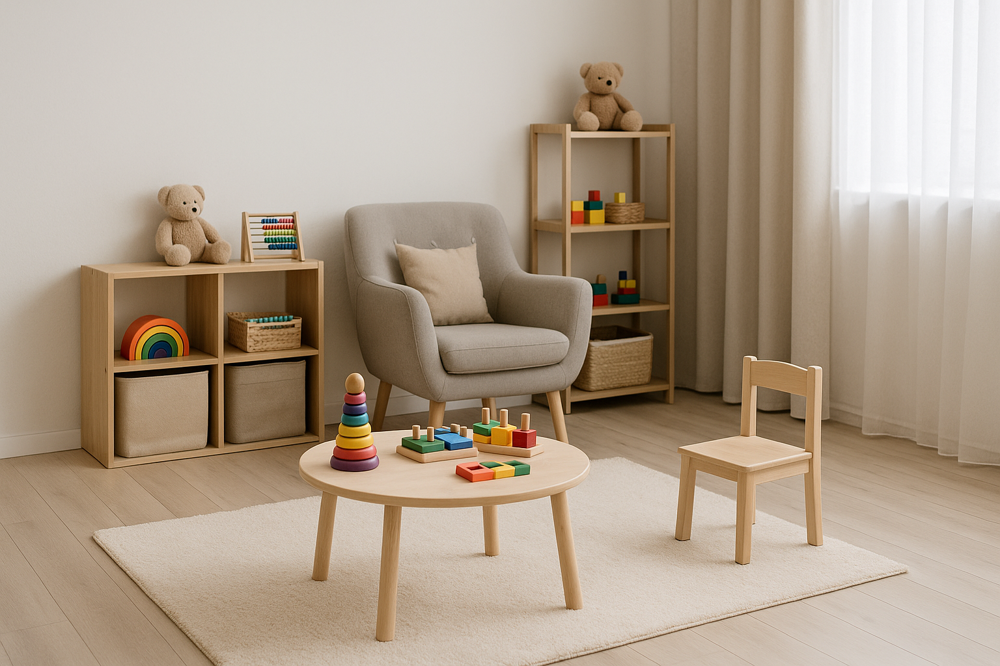
Entenda como a psicoterapia infantil oferece um espaço seguro para expressão emocional.
Saiba mais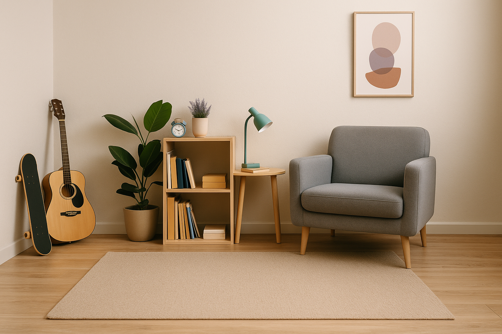
Um espaço de escuta e reflexão na transição para a vida adulta.
Saiba mais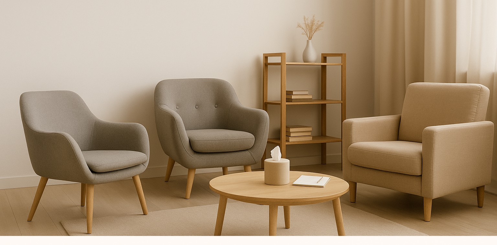
Um espaço de escuta, autoconhecimento e cuidado emocional ao longo da vida adulta.
Saiba maisApoio para pais e responsáveis que desejam fortalecer vínculos e lidar com desafios.
Saiba maisTextos psicoeducativos sobre ansiedade, depressão, autoestima, autoconhecimento e relações saudáveis.
Quando o corpo fala o que a mente tenta silenciar. Sinais, causas e caminhos de cuidado emocional.
Ler artigoEntenda sinais, sintomas e como a psicoterapia pode ajudar.
Ler textoCompreenda sinais e impactos da depressão e caminhos de cuidado.
Ler textoQuando o corpo continua, mas a mente já ultrapassou os limites.
Ler texto
Quando o descanso não dá conta, e as emoções pedem espaço para cuidado e reconstrução interna.
Ler textoSobrecarga e pressão constante no ambiente profissional.
Ler texto
Quando se cuidar deixa de ser luxo e vira necessidade.
Ler texto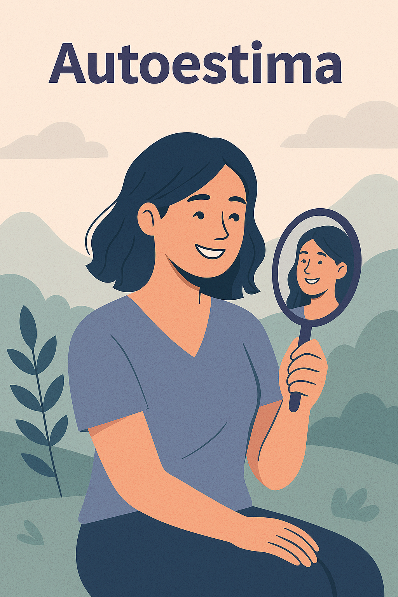
Fortalecer a autoestima envolve autoconhecimento e aceitação.
Saiba maisUma jornada que apoia escolhas mais conscientes.
Saiba mais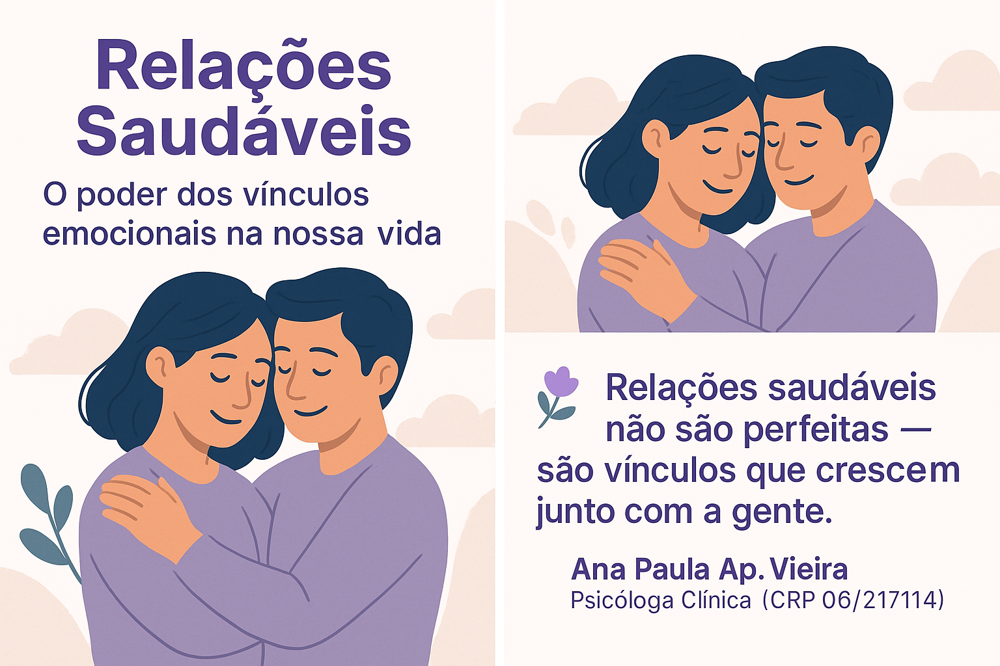
Vínculos emocionais que fortalecem a autoestima.
Ler artigo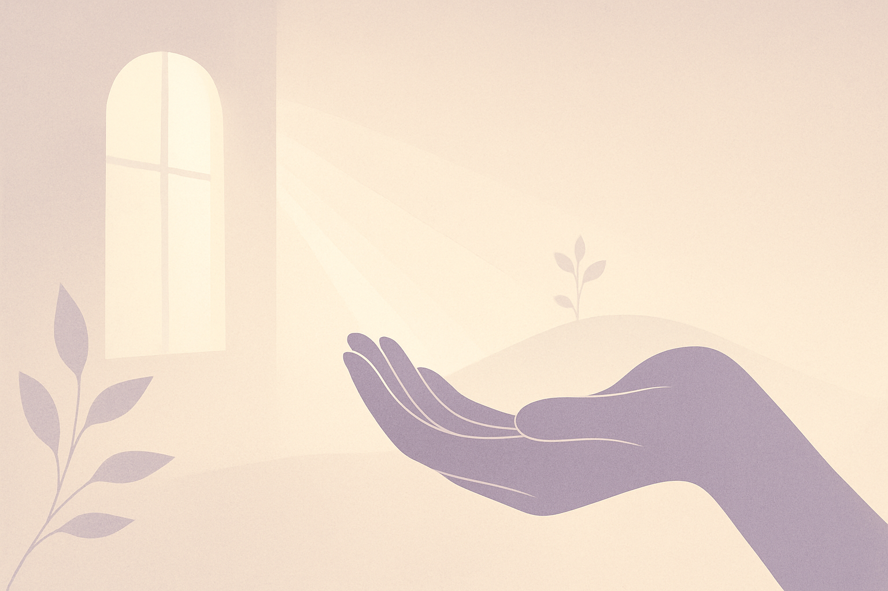
A fé como apoio no cuidado emocional.
Ler artigo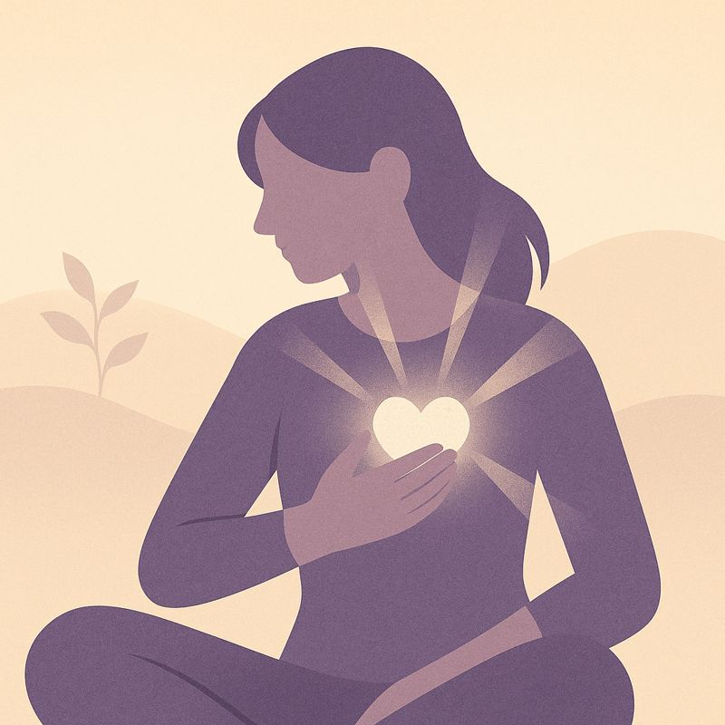
Aprender a caminhar com a dor.
Ler artigoTextos voltados para crianças, adolescentes e famílias.
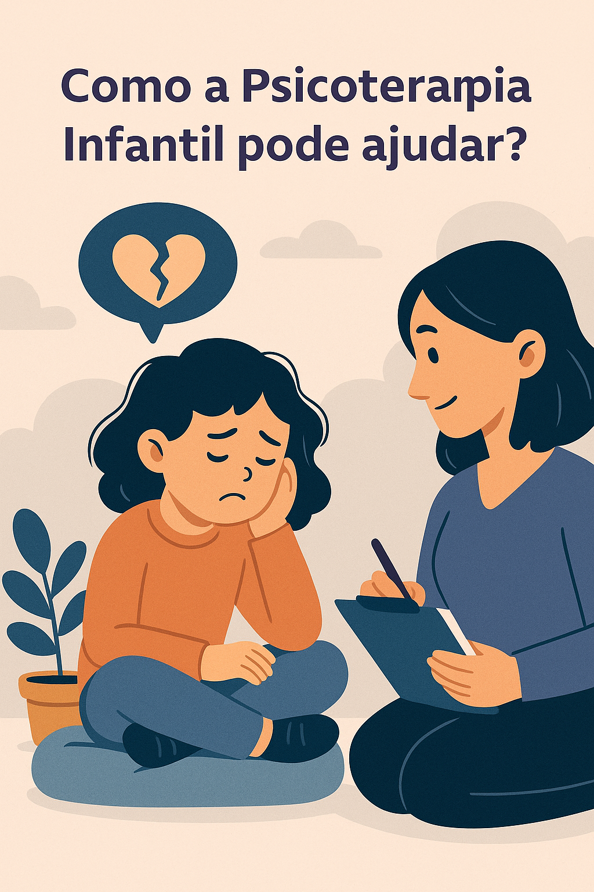
Como a psicoterapia infantil apoia o desenvolvimento emocional.
Ler artigo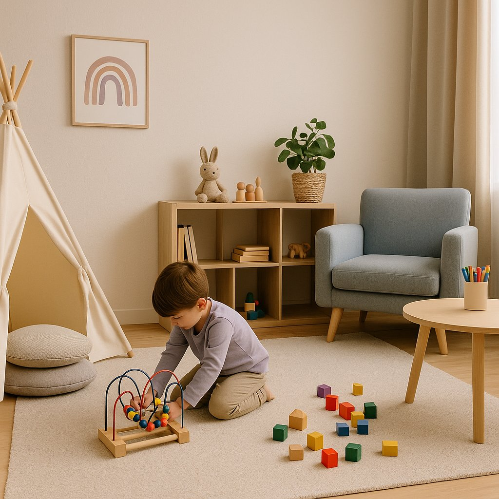
Quando buscar apoio psicológico para a criança.
Ler artigo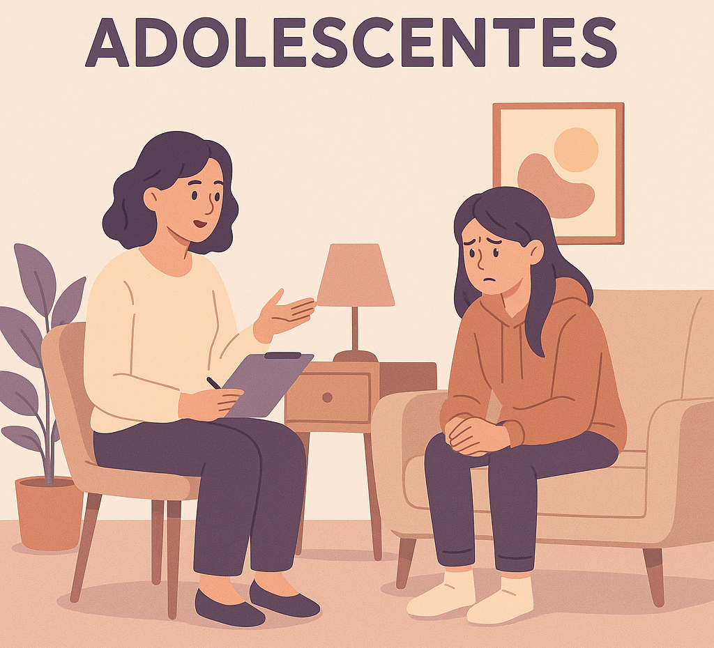
Apoio emocional na fase da adolescência.
Ler artigo